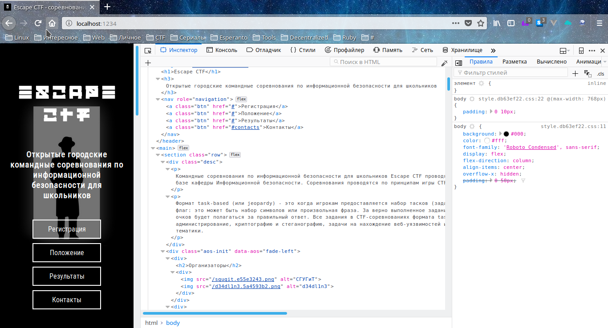

Курс Web-технологий в ИБ
by DEADBLACKCLOVER
Не много истории
- 1989 - Тим Бернерс Ли предложил идею обмена информацией посредством гипертекстовых страниц
- 1993 - Публикация проектов в сети для общественного пользования
- 1994 - Переход Тима Бернерса Ли в MIT, создание World Wide Web Consortium (W3C)
- 1995 - HTML 2.0, RFC 1866, Internet Explorer и Netscape Navigator, JavaScript
Web по технологиям использования
- Web-сайты
- Web-приложения
- Мобильные приложения
- Десктопные приложения
Что представляет собой Web?
Что мы видим снаружи
- Основы работы с браузерами
- Пока все DOM'a (HTML и CSS)
Что есть внутри и чего мы не видим
- Структура файлов на сервере (index.html, robots.txt, и т.д.)
- Всякие интересности
Javascript
- База
- Уязвимости (XSS и т.д.)
Общение с серверами
- Запросы и ответы
- HTTP и HTTPS
- GET, POST, DELETE, PUT
- Зачем нужна голова на плечах(Заголовки, Headers)
- Зачем нужны печеньки (Cookie и Session)
HTTP Сервера
- Apache, Nginx, IIS
- Сервера на основе языков программирования
Серверные языки Web
- PHP
- Ruby, Python, Node.js
- Go, Rust
СУБД
- SQL (MySQL, MariaDB, PostgreSQL)
- NoSQL (MongoDB, Freebase)
- phpmyadmin и прочие рычаги управления
HTML
<!DOCTYPE html>
<html lang="ru">
<head><title>My site</title></head>
<body>
Hello, world!
</body>
</html>
CSS
body {
color: green;
background: black;
}
h1 {
font-size: 20px;
}
Инструменты разработчика

Практика
https://escapectf.github.io/ctf-web-practice/p1/
Формат флага: Flag is [a-z]+_[a-z]+
Пример:
Flag is test_flag
flag_is_test_flag
но это не точно ;)